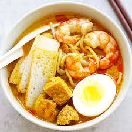

Laksa

Description:
Laksa is a spicy noodle soup popular in Southeast Asia, particularly in Malaysia and Singapore. It combines Chinese and Malay culinary influences, featuring a rich and flavorful coconut milk-based broth infused with spices, herbs, and seafood or chicken. The dish is typically served with rice noodles or egg noodles and garnished with fresh herbs, lime, and sometimes boiled eggs or tofu puffs.
There are several variations of laksa.
Ingredients:
- 200g rice noodles or egg noodles
- 200g cooked chicken, shredded (or tofu for a vegetarian option)
- 100g cooked shrimp, peeled and deveined
- 1 can (400ml) coconut milk
- 2 cups chicken or vegetable broth
- 2 tablespoons laksa paste (store-bought or homemade)
- 1 tablespoon vegetable oil
- 1 cup bean sprouts
- 2 boiled eggs, halved (optional)
- Fresh cilantro, chopped
- Fresh mint leaves
- Lime wedges
- Sliced red chili (optional)
Steps:
- Cook the noodles according to the package instructions. Drain and set aside.
- In a large pot, heat the vegetable oil over medium heat. Add the laksa paste and sauté for 2-3 minutes until fragrant.
- Add the coconut milk and chicken or vegetable broth to the pot. Stir well to combine with the laksa paste.
- Bring the mixture to a simmer and cook for about 10 minutes, allowing the flavors to meld together.
- Add the shredded chicken and cooked shrimp to the pot. Simmer for another 5 minutes until heated through.
- To serve, divide the cooked noodles into bowls. Ladle the hot laksa soup over the noodles.
- Top with bean sprouts, boiled egg halves (if using), fresh cilantro, mint leaves, and sliced red chili (if desired).
- Serve with lime wedges on the side for squeezing over the soup.
- Enjoy your delicious bowl of laksa!